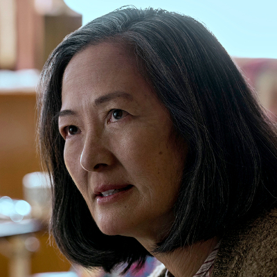

Ye Wenjie
Fala de modo enigmático com Saul e retorna à Costa Vermelha, onde Tatiana a encontra em uma despedida final.
Conteúdo até a temporada 1, episódio 8.
Ver Mapa de Conexões →Temporada 1
Acompanhe os acontecimentos registrados até o episódio escolhido.
Episódio 01 — Countdown
Astrofísica marcada pela violência da Revolução Cultural. No presente, é a mãe de Vera Ye.
Episódio 02 — Red Coast
Na base Costa Vermelha, responde a uma mensagem extraterrestre apesar do alerta de não fazê-lo. Seu encontro com Evans aproxima duas visões desencantadas da humanidade.
Episódio 04 — Our Lord
É revelada como líder do movimento aliado aos San-Ti e presa na operação contra a reunião.
Episódio 05 — Judgment Day
Ye é interrogada sobre o contato e a organização. Sua posição mostra que os antigos aliados humanos podem ter deixado de ser necessários aos San-Ti.
Episódio 07 — Only Advance
Fala de modo enigmático com Saul e retorna à Costa Vermelha, onde Tatiana a encontra em uma despedida final.
Personagens relacionados
- Ye ZhetaiFilha e pai
- Vera YeMãe e filha
- Mike EvansEncontro na China
- Tatiana HaasMovimento aliado aos San-Ti
- Saul DurandConversa enigmática
- Tatiana HaasDespedida na Costa Vermelha